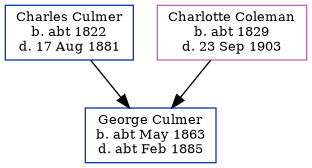

George Culmer cMay 1863 - c1885
[ Home ] | [ Calendar ] | [ Surnames Index ] | [ Errors ] | [ Family History ]The child of Charles Culmer (a farm waggoner) and Charlotte Coleman (a pauper), George Culmer, the great-great-uncle of Nigel Horne, was born in Monkton, Kent, England c. May 18631,2,3,4 and baptised there on 14 Jun 1863.
During his life, he was living at The Street, St Nicholas-at-Wade, Kent, England on 2 Apr 18716; and in Chislet, Kent, England in 18812.
He died c. Feb 1885 in Thanet, Kent, England5.
Parents
- Charles was born c. 1822
- Charlotte was born c. 1829
Citations
- 1871 England Census Online publication - Provo, UT, USA: The Generations Network, Inc., 2004.Original data - Census Returns of England and Wales, 1871. Kew, Surrey, England: The National Archives of the UK (TNA): Public Record Office (PRO), 1871. Data imaged from the National
- 1881 England Census Online publication - Provo, UT, USA: The Generations Network, Inc., 2004. 1881 British Isles Census Index provided by The Church of Jesus Christ of Latter-day Saints © Copyright 1999 Intellectual Reserve, Inc. All rights reserved. All use is subject to the
- England & Wales births 1837-2006 - Findmypast
- England & Wales, FreeBMD Birth Index, 1837-1915 Online publication - Provo, UT, USA: The Generations Network, Inc., 2006.Original data - General Register Office. England and Wales Civil Registration Indexes. London, England: General Register Office. © Crown copyright. Published by permission of the Cont
- England & Wales deaths 1837-2007 - Findmypast
- 1871 England, Wales & Scotland Census - Findmypast (was age 7 and the son of the head of the household)
Media
England & Wales births 1837-2006 - BMD/B/1863/2/AZ/000283/059
England & Wales deaths 1837-2007 - BMD/D/1885/1/AZ/000092/082
Family Tree
Map
Generated by ged2site. Last updated on Jul 3, 2024